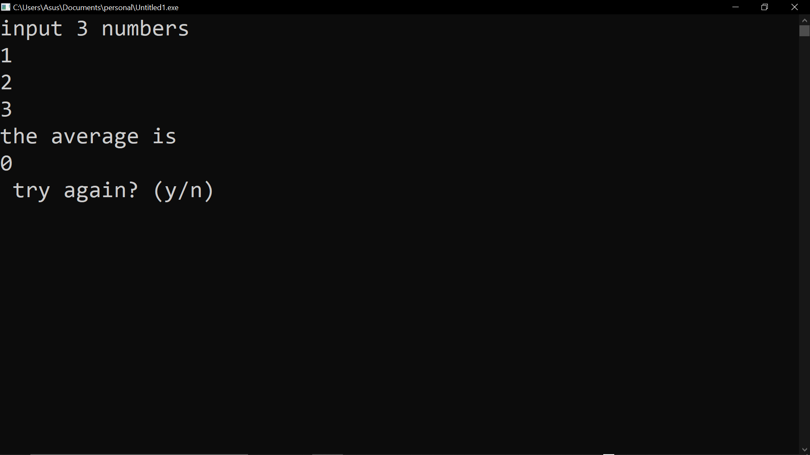
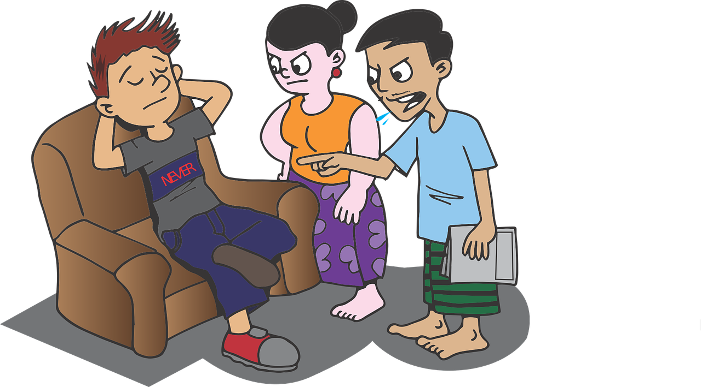

Missing a few things can cause disastrous consequences. Here is a recreation of a bug in project I made almost a year ago. I forgot to assign a variable which led to the image on the right. This can be made even worse if your software doesn't clearly state what went wrong or if you made a semantic error (i.e. the code works, yet the output is wrong).
Feedback can be helpful, especially in understanding what your client/s wants. If you choose not to listen, they may consider your project to be of low quality. Make sure to keep your reputation safe with what you create.
Image by Mote Oo Education from Pixabay
Computer science may not be everyone's forte, and it's definetly not going to be easy. However, it's always worth a shot trying again, even after you failed, whether if it was because of unmet deadlines, lack of quality, or impatience. If you want to develop your computer science skills, you're going to have to go through a few tries and learning some things along the way.
Photo by David Pupaza on Unsplash